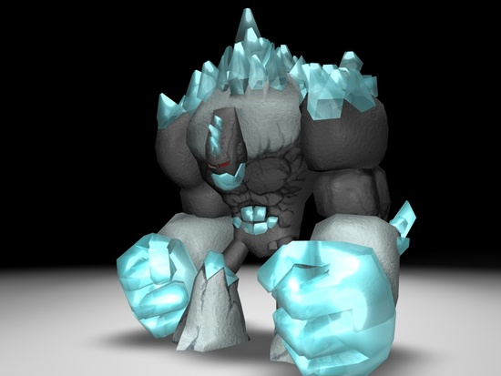
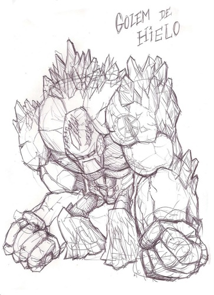
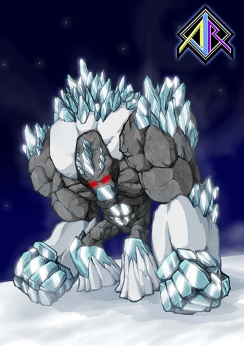

Apr 24, 2011 · 1 minute read · Comments
Games development
En el Estudio Evergreen siguen componiendo música para el videojuego Sion Tower. En esta ocasión nos traen la pieza que sonará durante el segundo nivel. No podría estar más contento con su trabajo, es una melodía pegadiza que se ajusta perfectamente al espíritu de Sion Tower. Podéis escuchadla después del salto.
Daniel Pellicer y Antonio Caro ya estaban consiguiendo buenos resultados para la banda sonora pero no se han conformado y siguen queriendo aprender nuevas técnicas. Os recomiendo encarecidamente que leáis el artículo correspondiente en su blog en el que explican todo el proceso.
Desde aquí ¡muchas gracias!
Apr 21, 2011 · 1 minute read · Comments
Computing

El próximo día 27 de mayo se celebra la !BarraLibreCamp 2011 en la Escuela Superior de Ingeniería en Cádiz. La !BarraLibreCamp es la BarCamp de Software Libre andaluza. Básicamente es una jornada llena de seminarios y talleres informales en el que todos los participantes deberían intervenir. Escribo este comentario por aquí para difundir un poco el evento y animar al personal a que se de una vuelta.
Una BarCamp tiene como principal punto fuerte que todo participante debería aportar algo en forma de actividad, comida o ayuda a la organización. Te unes a la lista de correo, te apuntas a la wiki y propones una actividad. Sugerí impartir un pequeño taller sobre Box2D, una conocida biblioteca libre de colisiones y físicas para videojuegos bidimensionales. La idea ha gustado y ya tengo preparado parte del material. Por razones de tiempo no puede ser nada del otro mundo aunque creo que servirá como buen punto de partida para los interesados.
El año pasado la !BarraLibreCamp se celebró en Granada y me lo pasé de maravilla. Se respiraba un ambiente de camaradería, participación y competición sana que daba gusto. ¡Recuerdo como me lincharon en el flamewar “Java vs Python” cuando defendí C++ para el desarrollo de videojuegos!
¡Nos vemos en la !BarraLibreCamp 2011 en Cádiz!
Apr 14, 2011 · 3 minute read · Comments
Hobbies

En el programa de los juegos del año independientes de Game Over hablaron de Game Dev Story, lo conocía desde hacía cierto tiempo pero fue entonces cuando el gusanillo me atacó con más fuerza así que acabé haciéndome con él para mi flamante HTC Desire HD. No puedo estar más satisfecho, pues me ha amenizado decenas de visitas al WC, viajes de autobús y esperas varias. En este artículo expondré mis impresiones sobre el simulador de empresa de videojuegos.
Gestiona tu empresa de videojuegos
Game Dev Story nos convierte en el presidente de un estudio de desarrollo de videojuegos. Comenzamos en un cuchitril a modo de oficina con un par de empleados trabajando como subcontrata para una empresa mayor mientras que tratamos de escalar en la industria. Retoma la fórmula de clásicos como Theme Hospital y lo adapta de forma estupenda al mundo móvil.
¿Realmente es una simulación?
Al principio parece un juego tremendamente profundo teniendo en cuenta que hablamos de un móvil. Debemos embarcarnos en proyectos, seleccionar la consola más apropiada, pagar los royalties oportunos, contratar al personal según las habilidades que necesitemos y decenas de detalles más. El proceso de desarrollo comienza y con él los primeros bugs que corregiremos (o no) de cara al lanzamiento. El número de aspectos a tener en cuenta es elevado: el presupuesto, la moral y energía de los trabajadores, la compatibilidad entre géneros o los fans son algunos ejemplos.
El principal problema de Game Dev Story es que la sensación de profundidad se desvanece cuando conseguimos la estabilidad económica suficiente para poder cometer pequeños errores. Al final todo se basa en lanzar juegos contratando a los mejores empleados e invertir en publicidad para arrasar en ventas y conseguir el premio al mejor juego del año. Deja de suponer un reto y pierde el interés aunque hasta entonces es satisfactorio.

La industria retratada en pixel art
El aspecto visual de Game Dev Story es muy simpático y ameno. Todo está diseñado con pixel art en perspectiva isométrica al más puro estilo Tycoon. En ese sentido, el juego rezuma amor por los cuatro costados y no puedo ponerle ninguna pega. Se entiende que para llegar a más mercado no hayan desplegado efectos ni utilizado gráficos 3D. No era necesario.
El mundo del videojuego está muy bien recreado y no podremos evitar una sonrisita cuando se organice el evento de presentación para una consola ficticia con un sospechoso parecido a alguna real. Los detalles están bastante cuidados y no sólo de la oficina sino que otros elementos han sido recreados como las ferias de videojuegos. No todo iba a ser una maravilla, lo que no se puede perdonar es el hecho de haya que jugar con el aparato en vertical y no tenga una resolución adaptable. Esto hace que queden dos bordes horrorosos arriba y abajo. Lamentable.

Conclusiones
Game Dev Story es un juego interesante por su temática, planteamiento y sorpresa inicial. Aunque se desinfle y no atraiga tanto conforme avanzan las horas de juego creo que merece la pena pagar los 3€ que cuesta en el Android Market. ¡Narices, es un juego de móviles! Los más escépticos pueden hacerse con la versión Lite de forma gratuita con la que podremos jugar durante dos años de simulación.
Apr 12, 2011 · 2 minute read · Comments
Hobbies

Durante las últimas semanas he estado probando varios juegos en Android y es sorprendente la cantidad que no sabe adaptarse a las características de un dispositivo móvil en términos de control. Speedx 3D es de los que más gratas sensaciones me ha producido por su sencillez y adictiva mecánica. A continuación sigue un breve comentario sobre el juego.

En Speedx 3D avanzamos por una especie de túnel de colores planos y vivos de corte futurista a gran velocidad. Debemos utilizar el acelerómetro para girar ante los obstáculos que se cruzan en nuestro camino. Básicamente el objetivo consiste en acumular puntos aguantando el mayor tiempo posible sin colisionar con ningún bloque. Lo apuesta todo a una única carta: poner nuestros reflejos al límite pero la jugada le sale de maravilla.
Está bastante nivelado gracias a los cuatro niveles de dificultad disponibles y no produce frustración cuando nos estampamos con algún cubo. Al contrario, el ansia por batir nuestro récord personal o colocarnos en algún puesto interesante en la clasificación global (mediante el sistema Open Feint) hace que sigamos intentándolo. Eso sí, el nivel “Pure” se vuelve demencial a los pocos segundos. Cabe destacar que el escenario se genera de forma procedural de forma que nunca se repite.

Existe una versión gratuita con anuncios el menú principal y una de pago (0.60€) sin publicidad. El precio es irrisorio pero si sois unos tacaños sabed que los anuncios no son demasiado intrusivos. Para partidas rápidas en el autobús es perfecto, queda recomendado.
Apr 8, 2011 · 1 minute read · Comments
Games development

Como podéis ver, AJR nuestro artista 3D, sigue trabajando muy duro en los modelos de Sion Tower. En esta ocasión nos enseña el Gólem de hielo, uno de los enemigos más poderosos del videojuego. Para el diseño se ha basado en la correspondiente descripción que aparece en el documento de diseño:
Una criatura de gran tamaño formada por bloques de hielo. Su avance es lento y pesado pero sus golpes son temibles.

En primer lugar realizó unos bocetos con su tableta gráfica para visualizar de forma más clara cómo quería que fuera el Gólem. Una vez conseguido comenzó el proceso de modelado, texturizado y animación. No está completamente acabado, así que si surgen cambios iré actualizando las imágenes según corresponda.

Por último, me gustaría recordar que los elementos multimedia de Sion Tower están sujetos a una licencia Creative Commons 3.0 by-nc-sa.